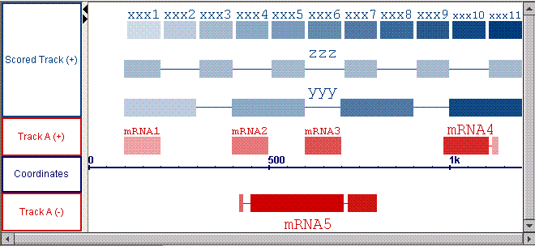
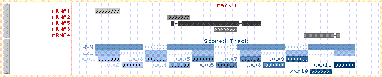
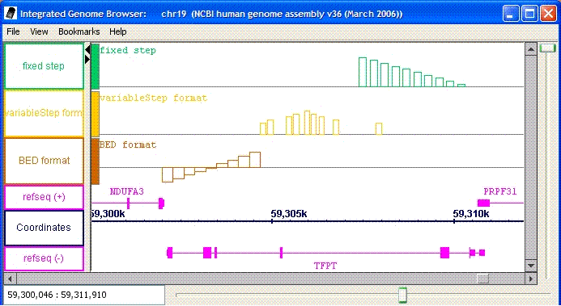
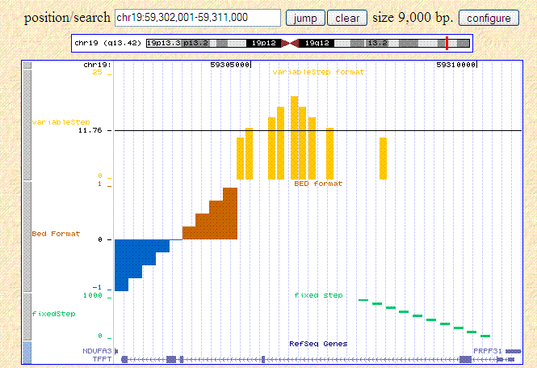
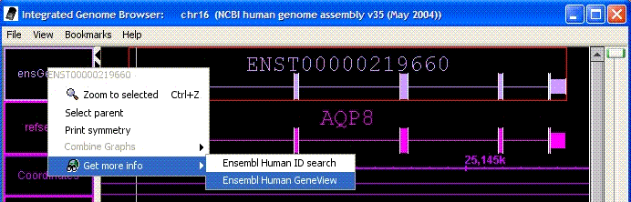
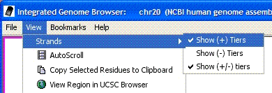
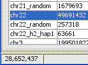

IGB 4.50 release notes.
Highlights:
IGB 4.50 adds new capabilities for file parsing and display manipulation.
It now supports additional types of ".chp" file, multi-sequence
".fasta" files, and ".wig" graph files. It is now easier to
use the same files in IGB and the UCSC Genome Browser.
IGB can now display scores of annotations through color, and allows
the showing of annotations for a single strand or both strands.
- Version 4.50
- We have made some changes that allow IGB and the
UCSC Genome Browser
to share data files more easily.
- Parsing of Track Lines is possible
for formats "BED", "GFF", "PSL" and "WIG", and is consistent with
the UCSC browser.
- Added support for reading the Wiggle Graph Format (".wig")
- The range coordinate box in IGB now allows input of coordinates in
the same format used by UCSC, e.g. "chr1:1,000,000-2,000,000", so
that you may easily copy and paste coordinates from one program
to the other.
Each of these points is described in detail below.
-
IGB now allows coloring exons, and other features, based on their score.
- Coloring by score can be turned on and off from a menu item.
- For formats that support track lines, turn on coloring by score
with the setting useScore=1.
- The colors are interpolated from the given foreground and
background colors.
- Scores must range between 1 and 1000.
- Annotations with no score, or with score=0, will be displayed
in the full foreground color.
Examples of using shading to display scored data. This
sample gff file is shown below as it
displays in IGB and in the UCSC browser. The file is compatible with
both browsers, but there are some minor differences in the display.

Figure: Example of displaying scores by color in IGB.
Note that it is possible to show different scores for each exon
in a single mRNA.

Figure: The same file viewed in the UCSC browser.
This browser does not show different scores for each exon;
the color of the whole mRNA is based on the average score of the exons.
The only allowed score color schemes in the UCSC browser are blue, brown and gray.
Here, for the track where we specified the color red, red is used only
for the lables, and grayscale is used for the scores.
- Track Lines.
Track lines were designed for use in the UCSC Genome Browser.
We have chosen to allow IGB to also make use of these track lines to
control some of the display properties. Not all track line properties
are supported in exactly the same way in the two browsers, but the behaviour
is very similar.
- Track lines are supported for these file formats in both browsers:
".bed", ".wig", ".psl", ".gff". The line must begin with "track".
- IGB also supports track lines for ".gff3" format.
In order to comply with the
GFF3 specification,
the track line in a GFF3 file must begin with "##track". Thus it is a non-standard
directive, allowed but not defined by the official GFF3 specification.
- IGB makes use of these track-line properties
name, color, description, useScore,
url and visibility.
(Other properties are ignored, but some may be supported
in a later version of IGB.)
- In IGB visibility=1 or visiblity=dense will cause the
track to be displayed in "collapsed" mode. All other settings of
visibility will cause the track to display in "expanded" mode.
- Wiggle Format IGB can now parse graph data in the UCSC
Wiggle (".wig")
format. Below is an example of a sample wiggle file
displayed in both IGB and the
UCSC browser.

Figure: Example of displaying a wiggle file in IGB.

Figure: The same file viewed in the UCSC browser.
- The DAS/2
client now complies completely with the final
DAS/2 specification
for feature data retrieval.
- This release adds support for parsing "CHP" files for
expression chips. The genomic locations of probesets
are not included in these files, but IGB will automatically load
that information as needed from a web server using the
DAS/2 protocol.
Affymetrix data formats are described in documents from the
Affymetrix
Developers Network.
- IGB now allows configuration of multiple web links from
each feature type. Links can currently be specified via
track lines in file formats that support track lines, and in DAS XML files.
It is also possible to specify links by regular-expression
matching in an igb_prefs.xml file. (Since we plan to replace all of the capabilities
of the igb_prefs.xml file with a graphical interface, the continued use of the
igb_prefs.xml file is discouraged.)

Figure: Multiple web links for an annotation. Here there are two separate
links for the selected annotation.
- You can now choose to show or hide the "+" and "-" strands of data.
Access this option via View→Strands.

Figure: You may choose to hide or show "+", "-" and "+/-" strands.
- The current position of the hairline is now shown in a new field in the lower-left.
Viewing the hairline position via View→Toggle Hairline Label
also remains possible.

Figure: The current location of the hairline is displayed in the lower left.
- You can now load a FASTA formatted file that contains sequence
data for multiple chromosomes (or other sequences). FASTA format
is recommended only for small genomes. Open these files in the same way
that you open any other file: File→Open.
- Bug fixed: The buttons for performing arithmetic operations on two graphs
have been fixed. (In version 4.48, they all performed subtraction, instead
of the full four operations.)
- Bug fixed: When "BAR" format files contain datat from multiple genomes,
the data from all those genomes will be read and made available
through the "Data Access" tab.